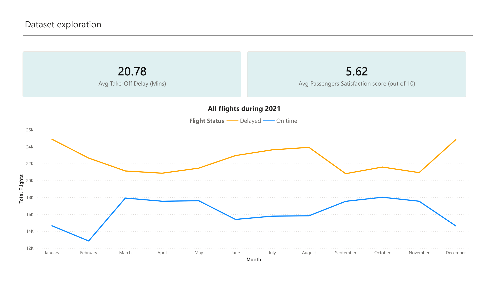
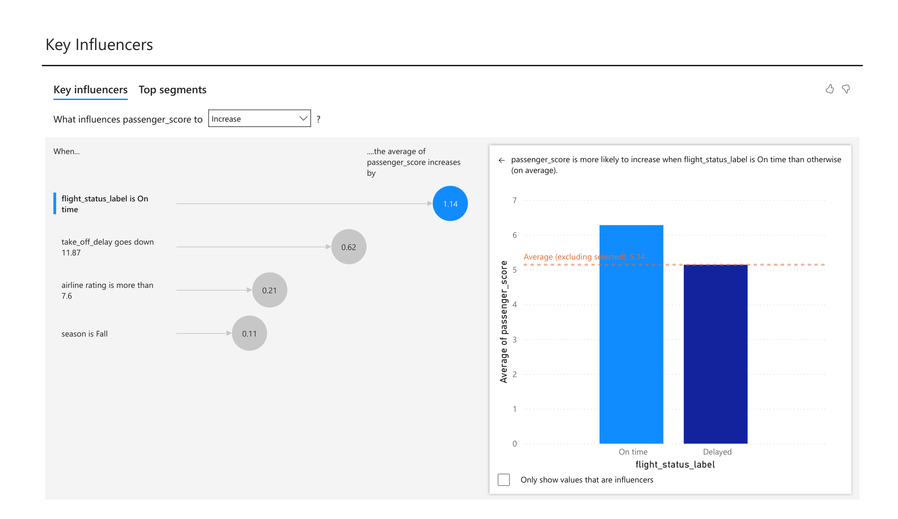
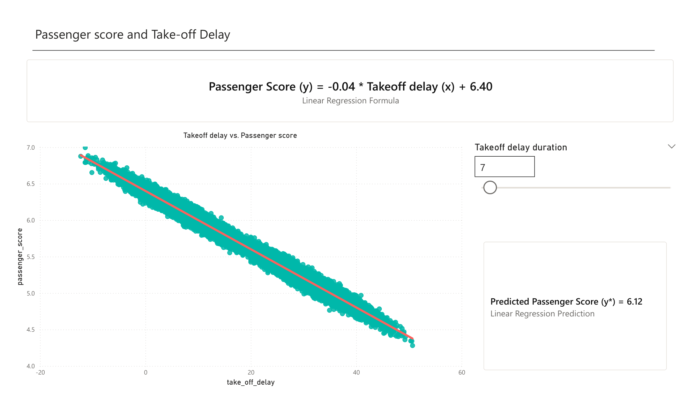
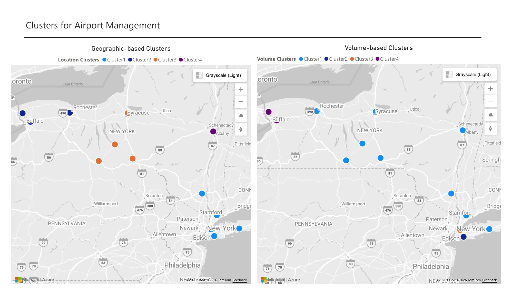
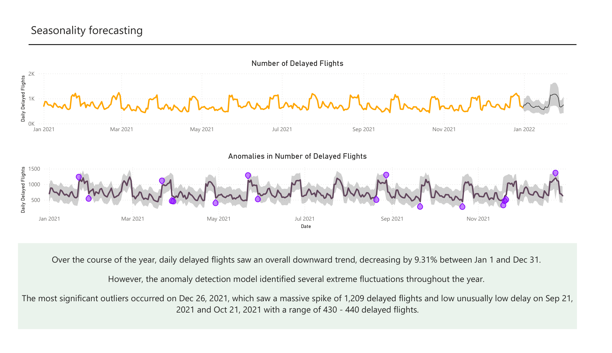
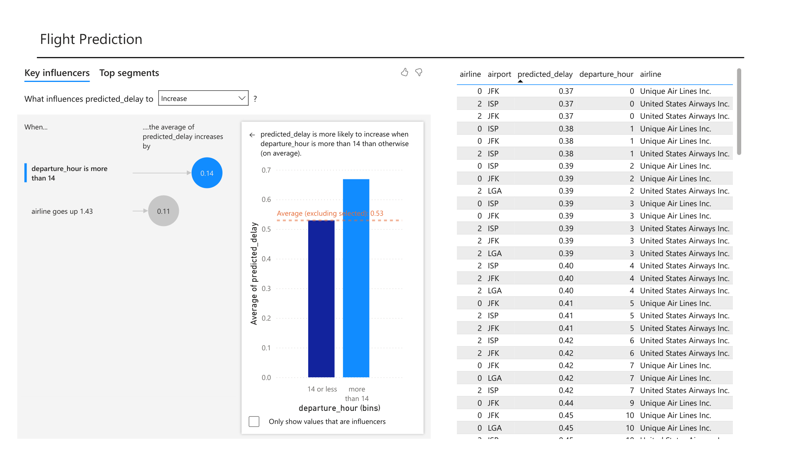

Why Are New York Flights Always Late?
A Power BI investigation into flight delays and passenger satisfaction across New York's airports, with forecasts and recommendations for the National Aviation Administration.
Introduction
The National Aviation Administration (NAA) oversees airport operations across the United States. Over the last few years, flights departing from New York have been running noticeably late, and the delays are starting to ripple out to other airports. Airports blame the airlines, the airlines blame a shortage of runways, and the NAA worries that if nothing improves, passengers will travel less and investment in aviation will fall.
I was brought in as an analytics consultant to review a full year of New York departures, explain what is driving the delays and the drop in passenger satisfaction, and turn the findings into clear recommendations. The whole analysis lives in an interactive Power BI report.
Problem Statement
The NAA needed three things from the data. First, an honest summary of how New York departures performed in 2021 and how satisfied passengers were. Second, an understanding of when and why delays happen, so new operational policies can target the real cause. Third, a forward look: with a major event in Florida in early January 2022, many people would fly out of New York that week, and the NAA wanted to recommend the flights least likely to be delayed.
Solution
I built a single Power BI report on a full year of commercial departures from New York in 2021, joined to reference data about the airports and airlines. The source tables were imported and modelled into a clean star schema, with derived columns added to make the data easier to read, such as turning the raw flight status into plain "On time" and "Delayed" labels.
From there the report answers the NAA's questions across dedicated pages: headline KPIs, a key-influencers breakdown of satisfaction, a linear regression to set a delay target, a clustering exercise to place new supervision offices, a time-series forecast with anomaly detection, and a view into the delay-prediction model. Every page closes back to a written conclusion the NAA can act on.
Tech Stack
- Power BI
- DAX
- Data Modeling
- Key Influencers
- Linear Regression
- Clustering
- Forecasting
- Anomaly Detection
What the Data Showed
1. How did New York departures perform in 2021?
Across the whole year, flights took off an average of 20.78 minutes late, and passengers rated their experience just 5.62 out of 10. The monthly view shows delayed flights consistently outnumbering on-time ones, with the gap widening in the winter months.

2. What drives passenger satisfaction the most?
Whether a flight is delayed is the single biggest factor: a delayed flight drops the satisfaction score by about 1.14 points on its own. Among numerical factors, the length of the take-off delay is the strongest driver. Satisfaction is, in short, a delay problem.

3. How short must delays be to keep passengers happy?
Focusing on the Summer season, a linear regression between take-off delay and satisfaction shows that delays must stay under 7.5 minutes to clear a score of 6.1. A 7-minute delay yields a passing 6.12, while 8 minutes drops it to a failing 6.08. That gives the NAA a concrete operational target rather than a vague goal.

4. Where should the NAA open its new supervision offices?
The NAA planned four offices, each supervising at most five airports, and weighed a location-based strategy against a passenger-volume one. Clustering the airports both ways showed the location-based strategy is the better choice: it respects the five-airport limit and keeps each office close to its airports, so supervisors can make weekly on-site visits without driving across the entire state.

5. What is the pattern of delays, and what comes next?
The daily delay time-series is highly volatile, repeating a weekly cycle all year on top of a slight downward trend. The one-month forecast into January 2022 expects that rhythm to continue, with an initial spike in early January before settling back into the weekly pattern, staying within historical confidence intervals. Anomaly detection also flags the specific dates with unusually high or low delays for the NAA to investigate.

6. Which flights should travellers actually book?
The prediction model points to a clear culprit: late departures, especially flights leaving after 14:00, carry the highest risk of delay. For the Florida trip, the safest options all share the lowest predicted delay probability of 37%, and all leave at midnight: a JFK departure via Unique Air Lines, and two more from JFK and ISP via United States Airways.

Conclusion
New York's delay problem is, at heart, a satisfaction problem: every minute a flight sits late costs the airport in passenger goodwill. The analysis gave the NAA a clear target to chase (keep summer delays under 7.5 minutes), a sensible plan for its new offices, a forecast it can trust, and a short list of low-risk flights to recommend. Turning a year of raw departures into decisions the NAA can defend is exactly what the report set out to do.
Takeaway
This project was my deep dive into business intelligence with Power BI, and it taught me a lot:
- A clean data model is the foundation of everything; the analysis is only as trustworthy as the relationships behind it.
- DAX turns a dataset into answers, from KPIs to a full linear regression computed in the model.
- Power BI's built-in analytics, the Key Influencers visual, forecasting and anomaly detection, can surface insight quickly when used with care.
- Most of all, every page should end in a plain recommendation a stakeholder can act on, not just a chart.
Resources
Explore the full report and the source project: